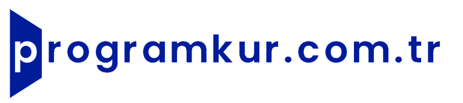

Programkur.com.trBina Bilgi Modellemesi (BIM) için sektör lideri olan Autodesk Revit yazılımının kurulumunu, kütüphane (family) entegrasyonlarını ve performans ayarlarını yapıyoruz.
Çizim, tasarım ve mühendislik programları yüksek sistem kaynağı tüketen, kurulumu ve lisans yapılandırması karmaşık yazılımlardır. Hatalı kurulumlar projelerinizin ortasında programın çökmesine, lisans hataları vermesine veya performans sorunlarına yol açabilir.
Revit, büyük BIM projeleri için yüksek RAM kapasitesi gerektiren bir yazılımdır. Proje boyutu büyüdükçe RAM ihtiyacı artar.
| Bileşen | Minimum | Önerilen |
|---|---|---|
| İşletim Sistemi | Windows 10 64-bit (1809+) | Windows 11 64-bit |
| İşlemci (CPU) | Intel/AMD, SSE2 destekli | 3.0+ GHz, çok çekirdekli |
| RAM | 8 GB | 16 GB (büyük projeler için 32 GB+) |
| Disk Alanı | 30 GB (kurulum) | SSD, 100 GB+ (proje dosyaları) |
| Ekran Kartı | DirectX 11, 4 GB VRAM | DirectX 12, 8 GB+ VRAM |
| Ekran Çözünürlüğü | 1280 × 1024 | 1920 × 1080 veya üzeri |
| İnternet | Lisans için gerekli | Geniş bant |
| Bileşen | Minimum | Önerilen |
|---|---|---|
| İşletim Sistemi | Windows 10 64-bit (1809+) | Windows 11 64-bit |
| İşlemci (CPU) | Intel/AMD, SSE2 destekli | 3.0+ GHz, çok çekirdekli |
| RAM | 8 GB | 16 GB+ |
| Disk Alanı | 30 GB | SSD, 100 GB+ |
| Ekran Kartı | DirectX 11, 4 GB VRAM | 8 GB+ VRAM |
| Ekran Çözünürlüğü | 1280 × 1024 | 1920 × 1080 |
| Bileşen | Minimum | Önerilen |
|---|---|---|
| İşletim Sistemi | Windows 10 64-bit | Windows 10/11 64-bit |
| İşlemci (CPU) | Intel/AMD, SSE2 destekli | 3.0+ GHz |
| RAM | 8 GB | 16 GB+ |
| Disk Alanı | 30 GB | SSD, 80 GB+ |
| Ekran Kartı | DirectX 11, 4 GB VRAM | 8 GB VRAM |
| Bileşen | Minimum | Önerilen |
|---|---|---|
| İşletim Sistemi | Windows 10 64-bit | Windows 10 64-bit |
| İşlemci (CPU) | Intel/AMD, SSE2 destekli | 3.0+ GHz |
| RAM | 8 GB | 16 GB |
| Disk Alanı | 30 GB | SSD, 80 GB+ |
| Ekran Kartı | DirectX 11, 4 GB VRAM | 8 GB VRAM |
Uzman ekibimiz AnyDesk veya TeamViewer ile bilgisayarınıza bağlanarak kurulumu güvenle gerçekleştirsin.
📞 0538 505 00 02 - Şimdi Ara 💬 WhatsAppEvet, Revit kurulumuyla birlikte Metric ve Imperial kütüphanelerin (families) eksiksiz olarak yüklenmesini ve program içine entegre edilmesini sağlıyoruz.
Evet, her iki program da aynı bilgisayarda sorunsuz çalışır. Hatta projelerinizi iki program arasında kolayca aktarabilirsiniz.